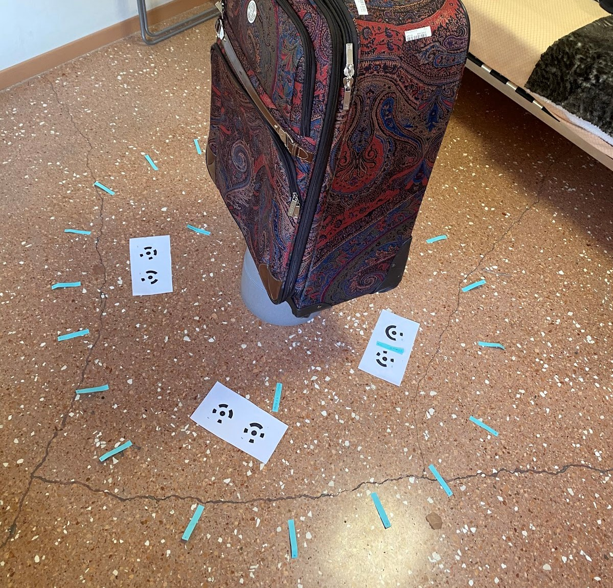
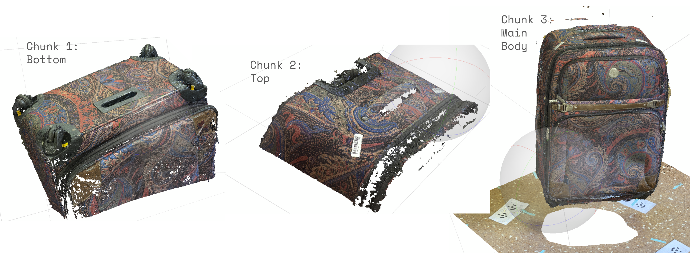
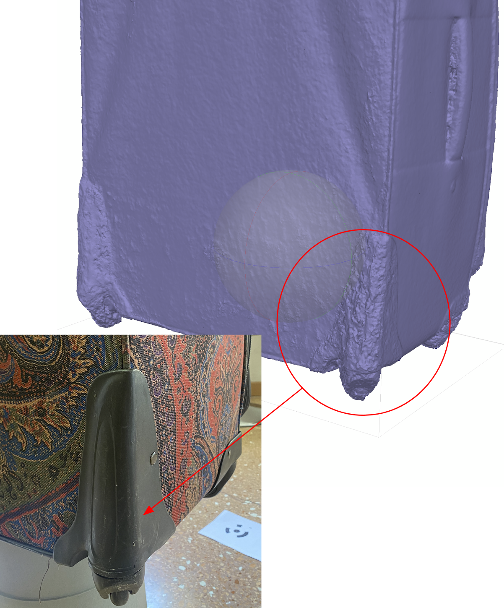
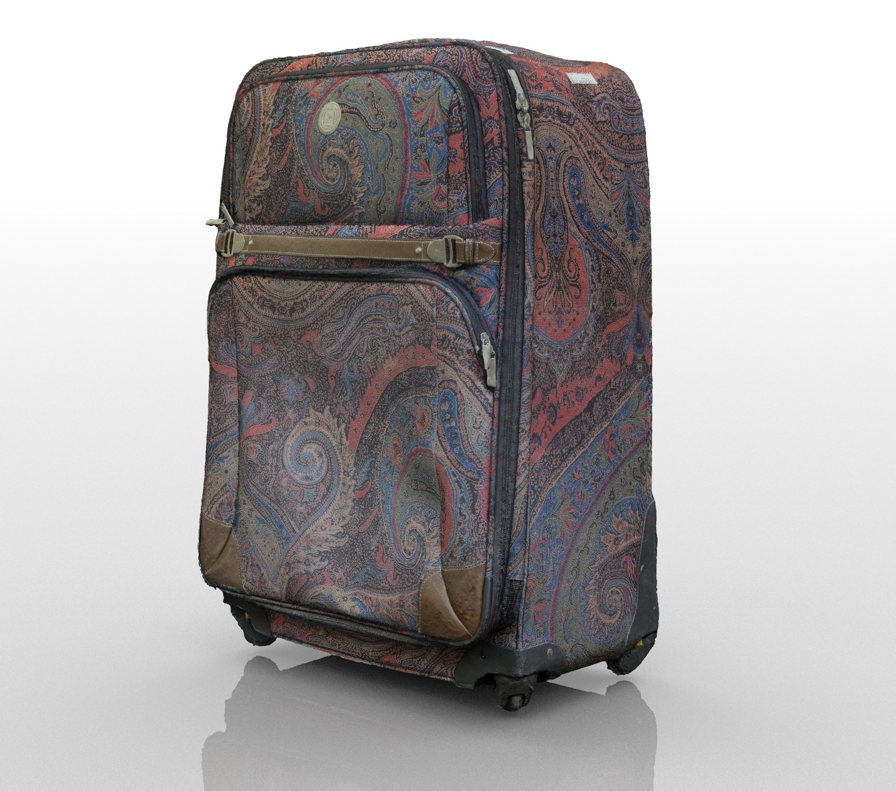
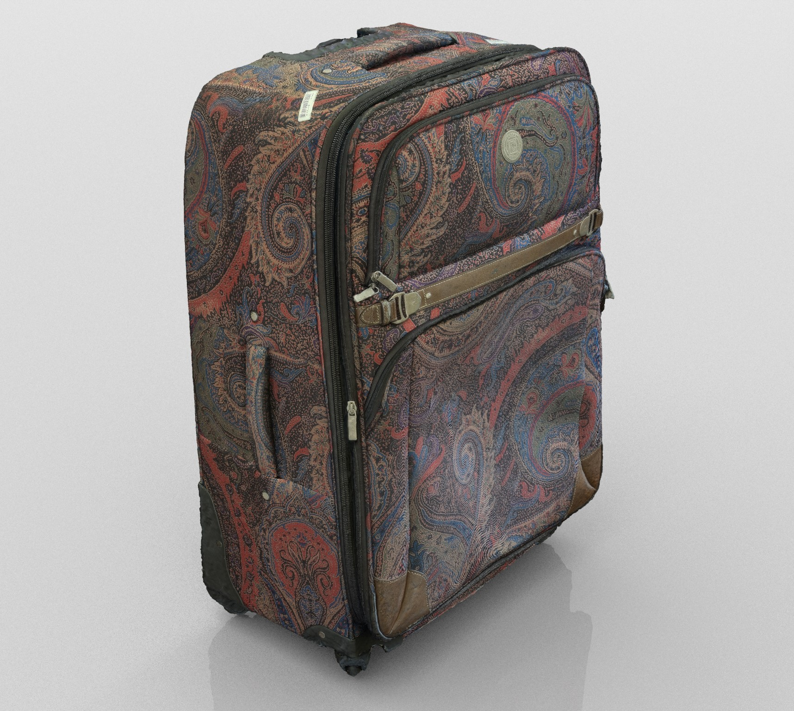

Introduction
In the fall of 2020, using just my iPhone and the Agisoft Metashape software, I created a 3D model of a 47 x 31.2 x 75.6 cm suitcase. Through the production of this model, I got an in-depth understanding of the Agisoft Metashape and the greater photogrammetric pipeline. Although I’m used to creating models in CAD software, I have found that this technique has a lot of potential in the design space.
The low-resolution sketchfab model.
My Setup
In my Milan dorm room, I set up 20 equidistant points on the floor with blue sticky notes, 35 cm away from the object. I then placed 4 sets of agisoft markers on the ground to help with scaling in the software. Using a weight tied to my phone case, I was able to achieve consistent vertical and horizontal distance with each set of shots. The suitcase was also elevated on a plastic pot to allow for better shooting angles on the underside of the suitcase.

Final Approach
I attempted several approaches to capturing images of my object. The best approach I found was to take 3 sets of images at different orientations. In the software I created 3 ‘chunks’ corresponding to the three suitcase orientations. After marking corresponding points in each chunk, I aligned the pieces to make a complete model of my suitcase. I then cleaned my model in Meshmixer and MeshLab before uploading a low resolution version to SketchFab.

Key Take-Aways
I learned a lot about low-cost photogrammetry through this process. Not having access to high-end equipment or studios presented a definite challenge, but I ended up discovering how to optimize this technique for this use case. While using the software, I found that masking my images, paying particular attention to lighting in my environment, and referencing the Agisoft Metashape documentation helped me to get a high quality model with my available equipment.


(left) A set of the masks used to isolate the suitcase. (right) degredation of the model due to insufficient lighting.
Applications
I think this is a great technique for creating custom, wearable technology. Using photogrammetry, a designer could create a model of body parts with a fairly high degree of accuracy while also using cheap tools. It would be an especially good starting point for a-typical body types. Additionally, due to the low tooling costs, designers with a tight budget can utilize this tool to make high accuracy models.


(left) LinkedIn of CITRIS and the Banatao Institute